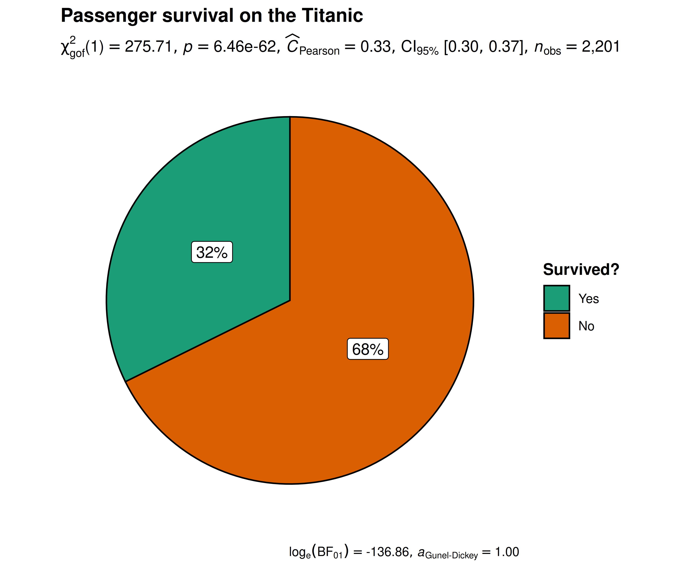
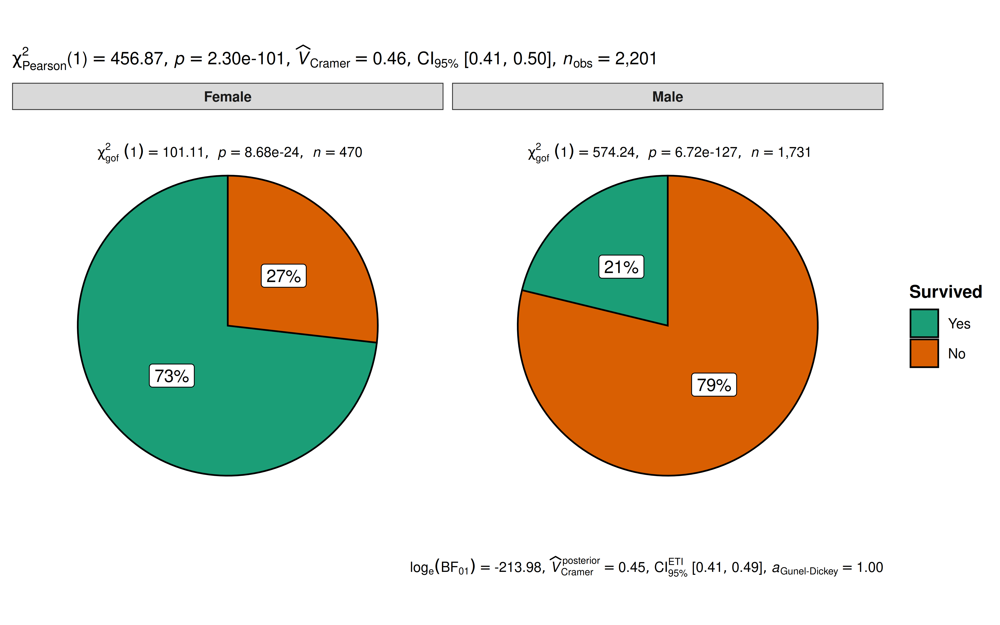
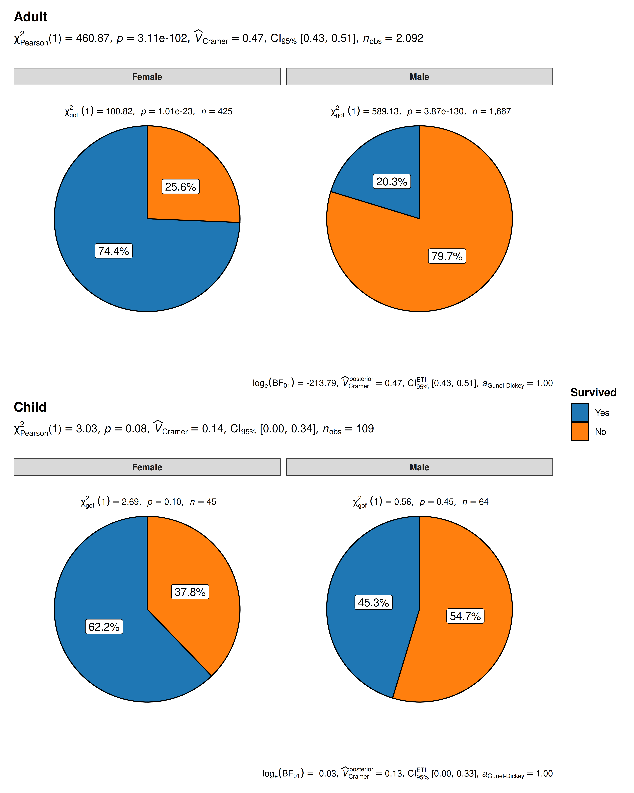
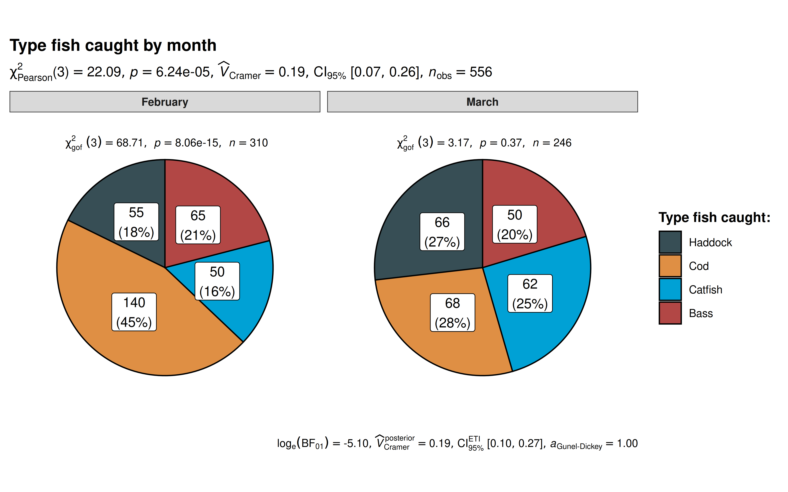
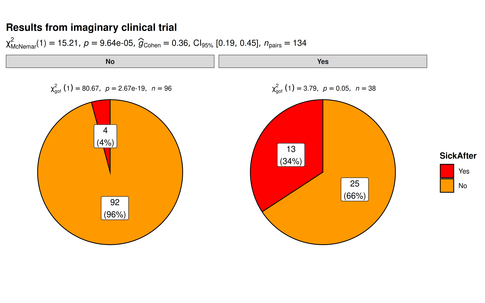
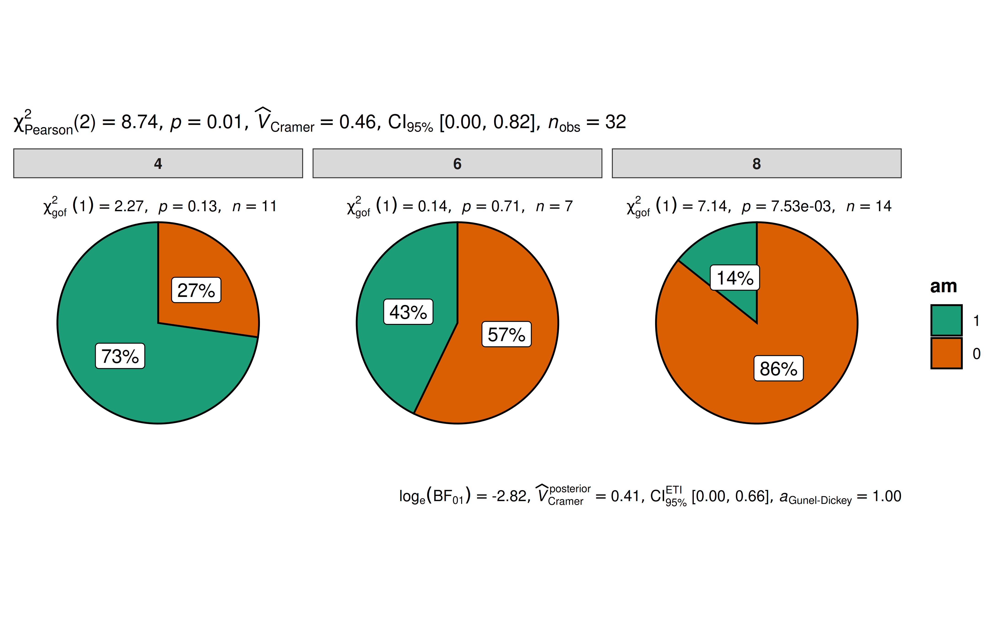

You can cite this package/vignette as:
To cite package 'ggstatsplot' in publications use:
Patil, I. (2021). Visualizations with statistical details: The
'ggstatsplot' approach. Journal of Open Source Software, 6(61), 3167,
doi:10.21105/joss.03167
A BibTeX entry for LaTeX users is
@Article{,
doi = {10.21105/joss.03167},
url = {https://doi.org/10.21105/joss.03167},
year = {2021},
publisher = {{The Open Journal}},
volume = {6},
number = {61},
pages = {3167},
author = {Indrajeet Patil},
title = {{Visualizations with statistical details: The {'ggstatsplot'} approach}},
journal = {{Journal of Open Source Software}},
}Lifecycle: 
Introduction to ggpiestats
The function ggpiestats can be used for quick
data exploration and/or to prepare
publication-ready pie charts to summarize the
statistical relationship(s) among one or more categorical variables. We
will see examples of how to use this function in this vignette.
To begin with, here are some instances where you would want to use
ggpiestats-
to check if the proportion of observations matches our hypothesized proportion, this is typically known as a “Goodness of Fit” test
to see if the frequency distribution of two categorical variables are independent of each other using the contingency table analysis
to check if the proportion of observations at each level of a categorical variable is equal
Note: The following demo uses the pipe operator
(%>%), if you are not familiar with this operator, here
is a good explanation: http://r4ds.had.co.nz/pipes.html.
ggpiestats works only with data
organized in data frames or tibbles. It will not work with other data
structures like base-R tables or matrices. It can operate on data frames
that are organized with one row per observation or data frames that have
one column containing counts. This vignette provides examples of both
(see examples below).
To help demonstrate how ggpiestats can be used with
categorical (also known as nominal) data, a modified version of the
original Titanic dataset (from the datasets
library) has been provided in the ggstatsplot package
with the name Titanic_full. The Titanic Passenger Survival
Dataset provides information “on the fate of passengers on the fatal
maiden voyage of the ocean liner Titanic, including economic
status (class), sex, age, and survival.”
Let’s have a look at the structure of both.
library(dplyr)
library(ggstatsplot)
# looking at the original data in tabular format
dplyr::glimpse(Titanic)
#> 'table' num [1:4, 1:2, 1:2, 1:2] 0 0 35 0 0 0 17 0 118 154 ...
#> - attr(*, "dimnames")=List of 4
#> ..$ Class : chr [1:4] "1st" "2nd" "3rd" "Crew"
#> ..$ Sex : chr [1:2] "Male" "Female"
#> ..$ Age : chr [1:2] "Child" "Adult"
#> ..$ Survived: chr [1:2] "No" "Yes"
# looking at the dataset as a tibble or data frame
dplyr::glimpse(Titanic_full)
#> Rows: 2,201
#> Columns: 5
#> $ id <dbl> 1, 2, 3, 4, 5, 6, 7, 8, 9, 10, 11, 12, 13, 14, 15, 16, 17, 18…
#> $ Class <fct> 3rd, 3rd, 3rd, 3rd, 3rd, 3rd, 3rd, 3rd, 3rd, 3rd, 3rd, 3rd, 3…
#> $ Sex <fct> Male, Male, Male, Male, Male, Male, Male, Male, Male, Male, M…
#> $ Age <fct> Child, Child, Child, Child, Child, Child, Child, Child, Child…
#> $ Survived <fct> No, No, No, No, No, No, No, No, No, No, No, No, No, No, No, N…Goodness of Fit with ggpiestats
The simplest use case for ggpiestats is that we want to
display information about one categorical or nominal
variable. As part of that display or plot, we may also choose to execute
a chi-squared goodness of fit test to see whether the proportions (or
percentages) in categories of the single variable appear to line up with
our hypothesis or model. To start simple and then expand, let’s say that
we’d like to display a piechart with the percentages of passengers who
did or did not survive. Our initial hypothesis is that it was no
different than flipping a coin. People had a 50/50 chance of
surviving.
# for reproducibility
set.seed(123)
# plot
ggpiestats(
data = Titanic_full,
x = Survived,
title = "Passenger survival on the Titanic",
caption = "Source: Titanic survival dataset",
legend.title = "Survived?"
)
Note: equal proportions per category are the
default, e.g. 50/50, but you can specify any hypothesized ratio you like
with ratio so if our hypothesis was that 80% died and 20%
survived we would add ratio = c(.80,.20) when we entered
the code.
Independence (or association) with ggpiestats
Let’s next investigate whether the passenger’s gender was independent
of, or associated with, gender. The test is whether the proportion of
people who survived was different between the sexes using
ggpiestats.
# for reproducibility
set.seed(123)
## plot
ggpiestats(
data = Titanic_full,
x = Survived,
y = Sex
) + # further modification with `{ggplot2}` commands
ggplot2::theme(
plot.title = ggplot2::element_text(
color = "black",
size = 14,
hjust = 0
)
)
The plot clearly shows that survival rates were very different between males and females. The Pearson’s \(\chi^2\)-test of independence is significant given our large sample size. Additionally, for both females and males, the survival rates were significantly different than 50% as indicated by a goodness of fit test for each gender.
Grouped analysis with grouped_ggpiestats
What if we want to do the same analysis of gender but also factor in the passenger’s age (Age)? We have information that classifies the passengers as Child or Adult, perhaps that makes a difference to their survival rate?
ggstatsplot provides a special helper function for
such instances: grouped_ggpiestats. It is a convenient
wrapper function around combine_plots. It applies
ggpiestats across all levels of a
specified grouping variable and then combines the list
of individual plots into a single plot. Note that the grouping variable
can be anything: conditions in a given study, groups in a study sample,
different studies, etc.
# for reproducibility
set.seed(123)
# plot
grouped_ggpiestats(
# arguments relevant for `ggpiestats()`
data = Titanic_full,
x = Survived,
y = Sex,
grouping.var = Age,
perc.k = 1,
package = "ggsci",
palette = "category10_d3",
# arguments relevant for `combine_plots()`
title.text = "Passenger survival on the Titanic by gender and age",
caption.text = "Asterisks denote results from proportion tests; \n***: p < 0.001, ns: non-significant",
plotgrid.args = list(nrow = 2)
)
The resulting pie charts and statistics make the story clear. For adults gender very much matters. Women survived at much higher rates than men. For children gender is not significantly associated with survival and both male and female children have a survival rate that is not significantly different from 50/50.
Grouped analysis with ggpiestats +
{purrr}
Although grouped_ggpiestats provides a quick way to
explore the data, it leaves much to be desired. For example, we may want
to add different captions, titles, themes, or palettes for each level of
the grouping variable, etc. For cases like these, it would be better to
use purrr package.
See the associated vignette here: https://indrajeetpatil.github.io/ggstatsplot/articles/web_only/purrr_examples.html
Working with data organized by counts
ggpiestats can also work with data frame containing
counts (aka tabled data), i.e., when each row doesn’t correspond to a
unique observation. For example, consider the following notional
fishing data frame containing data from two boats
(A and B) about the number of different types
fish they caught in the months of February and
March. In this data frame, each row corresponds to a unique
combination of Boat and Month.
# for reproducibility
set.seed(123)
# creating a data frame
# (this is completely fictional; I don't know first thing about fishing!)
(
fishing <- tibble::as_tibble(data.frame(
Boat = c(rep("B", 4), rep("A", 4), rep("A", 4), rep("B", 4)),
Month = c(rep("February", 2), rep("March", 2), rep("February", 2), rep("March", 2)),
Fish = c(
"Bass",
"Catfish",
"Cod",
"Haddock",
"Cod",
"Haddock",
"Bass",
"Catfish",
"Bass",
"Catfish",
"Cod",
"Haddock",
"Cod",
"Haddock",
"Bass",
"Catfish"
),
SumOfCaught = c(25, 20, 35, 40, 40, 25, 30, 42, 40, 30, 33, 26, 100, 30, 20, 20)
))
)
#> # A tibble: 16 × 4
#> Boat Month Fish SumOfCaught
#> <chr> <chr> <chr> <dbl>
#> 1 B February Bass 25
#> 2 B February Catfish 20
#> 3 B March Cod 35
#> 4 B March Haddock 40
#> 5 A February Cod 40
#> 6 A February Haddock 25
#> 7 A March Bass 30
#> 8 A March Catfish 42
#> 9 A February Bass 40
#> 10 A February Catfish 30
#> 11 A March Cod 33
#> 12 A March Haddock 26
#> 13 B February Cod 100
#> 14 B February Haddock 30
#> 15 B March Bass 20
#> 16 B March Catfish 20When the data is organized this way, we make a slightly different
call to the ggpiestats() function: we use the
counts argument.
If we want to investigate the relationship of type of fish by month (a test of independence), our command would be:
ggpiestats(
data = fishing,
x = Fish,
y = Month,
counts = SumOfCaught,
label = "both",
package = "ggsci",
palette = "default_jama",
title = "Type fish caught by month",
caption = "Source: completely made up",
legend.title = "Type fish caught: "
)
The results support our hypothesis that the type of fish caught is related to the month in which we’re fishing. The \(\chi^2\) independence test results at the top of the plot. In February, we catch significantly more Cod than we would hypothesize for an equal distribution. Whereas, in March, our results indicate there’s no strong evidence that the distribution isn’t equal.
Within-subjects designs
Let’s imagine we’re conducting clinical trials for some new imaginary
wonder drug. We have 134 subjects entering the trial. Some of them enter
healthy (n = 96), some of them enter the trial already being
sick (n = 38). All of them receive our treatment or
intervention. Then we check back in a month to see if they are healthy
or sick. A classic pre/post experimental design. We’re interested in
seeing the change in both groupings. In the case of within-subjects
designs, you can set paired = TRUE, which will display
results from McNemar test in the subtitle.
(Note: If you forget to set
paired = TRUE, the results will be inaccurate.)
# for reproducibility
set.seed(123)
# create our imaginary data
clinical_trial <- tibble::tribble(
~SickBefore, ~SickAfter, ~Counts,
"No", "Yes", 4,
"Yes", "No", 25,
"Yes", "Yes", 13,
"No", "No", 92
)
# plot
ggpiestats(
data = clinical_trial,
x = SickAfter,
y = SickBefore,
counts = Counts,
paired = TRUE,
label = "both",
title = "Results from imaginary clinical trial",
package = "ggsci",
palette = "default_ucscgb"
)
The results bode well for our experimental wonder drug. Of the 96 who started out healthy only 4% were sick after a month. Ideally, we would have hoped for zero but reality is seldom perfect. On the other side of the 38 who started out sick that number has reduced to just 13 or 34% which is a marked improvement.
Summary of graphics
| graphical element |
geom_ used |
argument for further modification |
|---|---|---|
| pie slices | ggplot2::geom_col |
❌ |
| descriptive labels |
ggplot2::geom_label/ggrepel::geom_label_repel
|
label.args |
Summary of tests
two-way table
Hypothesis testing
| Type | Design | Test | Function used |
|---|---|---|---|
| Parametric/Non-parametric | Unpaired | Pearson’s \(\chi^2\) test | stats::chisq.test |
| Bayesian | Unpaired | Bayesian Pearson’s \(\chi^2\) test | BayesFactor::contingencyTableBF |
| Parametric/Non-parametric | Paired | McNemar’s \(\chi^2\) test | stats::mcnemar.test |
| Bayesian | Paired | ❌ | ❌ |
Effect size estimation
| Type | Design | Effect size | CI? | Function used |
|---|---|---|---|---|
| Parametric/Non-parametric | Unpaired | Cramer’s \(V\) | ✅ | effectsize::cramers_v |
| Bayesian | Unpaired | Cramer’s \(V\) | ✅ | effectsize::cramers_v |
| Parametric/Non-parametric | Paired | Cohen’s \(g\) | ✅ | effectsize::cohens_g |
| Bayesian | Paired | ❌ | ❌ | ❌ |
one-way table
Hypothesis testing
| Type | Test | Function used |
|---|---|---|
| Parametric/Non-parametric | Goodness of fit \(\chi^2\) test | stats::chisq.test |
| Bayesian | Bayesian Goodness of fit \(\chi^2\) test | (custom) |
Effect size estimation
| Type | Effect size | CI? | Function used |
|---|---|---|---|
| Parametric/Non-parametric | Pearson’s \(C\) | ✅ | effectsize::pearsons_c |
| Bayesian | ❌ | ❌ | ❌ |
Reporting
If you wish to include statistical analysis results in a publication/report, the ideal reporting practice will be a hybrid of two approaches:
the ggstatsplot approach, where the plot contains both the visual and numerical summaries about a statistical model, and
the standard narrative approach, which provides interpretive context for the reported statistics.
For example, let’s see the following example:
ggpiestats(mtcars, am, cyl)
The narrative context (assuming type = "parametric") can
complement this plot either as a figure caption or in the main text-
Pearson’s \(\chi^2\)-test of independence revealed that, across 32 automobiles, showed that there was a significant association between transmission engine and number of cylinders. The Bayes Factor for the same analysis revealed that the data were 16.78 times more probable under the alternative hypothesis as compared to the null hypothesis. This can be considered strong evidence (Jeffreys, 1961) in favor of the alternative hypothesis.
Similar reporting style can be followed when the function performs one-sample goodness-of-fit test instead of a \(\chi^2\)-test.
Same holds true for ggbarstats.
Suggestions
If you find any bugs or have any suggestions/remarks, please file an issue on GitHub: https://github.com/IndrajeetPatil/ggstatsplot/issues